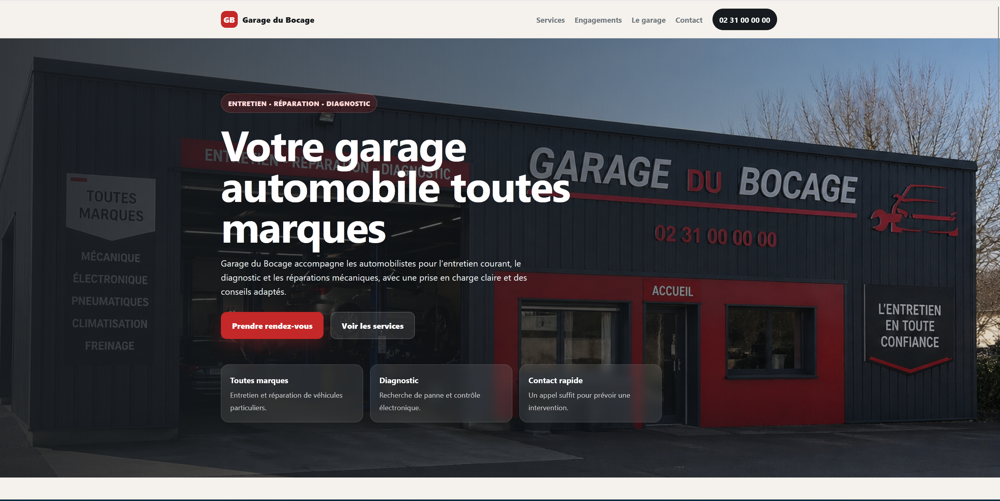

Repenser un site de garage pour le rendre plus clair, plus rassurant et plus efficace.
Cette page ne présente pas le site final comme un site client, mais la logique de refonte : ce qui devait être amélioré, pourquoi, et comment la nouvelle structure répond à ces enjeux.

Ce qui devait être amélioré
Le site de départ remplissait son rôle de présentation, mais il pouvait être plus lisible et plus orienté action. L’enjeu de la refonte était donc d’améliorer la compréhension immédiate du service proposé.
Hiérarchie trop faible
Les informations importantes n’étaient pas assez mises en avant : services, contact et appels à l’action.
Parcours utilisateur perfectible
Un visiteur local doit pouvoir comprendre rapidement l’offre puis appeler ou demander un rendez-vous.
Confiance à renforcer
Le design et les contenus pouvaient davantage rassurer en valorisant la proximité, la clarté et les services.
La direction prise pour la refonte
La refonte ne se limite pas à une nouvelle esthétique : elle vise à rendre le site plus utile, plus direct et plus cohérent avec les attentes d’un visiteur qui cherche une information rapide.
Rendre l’offre plus lisible
Mettre en avant les prestations essentielles : entretien, diagnostic, pneumatiques, freinage et mécanique générale.
Créer un cadre plus rassurant
Valoriser les engagements, le contact rapide, la transparence et la proximité d’un garage local.
Faciliter la prise de contact
Installer des appels à l’action visibles : prise de rendez-vous, appel direct, accès rapide aux coordonnées.
Les décisions prises
La page finale a été construite autour d’une logique simple : guider l’utilisateur, réduire la friction et faire apparaître les informations au bon moment.
Découpage en sections courtes
Le site refait adopte un enchaînement plus naturel : hero, services, engagements, présentation, contact.
Services et contact mis en avant
Les contenus les plus utiles pour un visiteur local sont placés en avant afin de réduire le temps de recherche.
Ton plus professionnel et plus clair
Les messages de réassurance remplacent les formulations trop “portfolio” pour mieux coller à un vrai site vitrine.
CTA visibles et mobile pensé
Le bouton d’appel mobile et les appels à l’action améliorent la capacité du site à déclencher une prise de contact.
Avant / après
La valeur de ce projet se situe dans la progression : partir d’une base simple, identifier ses limites, puis proposer une version plus aboutie et mieux pensée.
Site initial
- Présentation simple du garage
- Hiérarchie visuelle limitée
- Contact moins mis en avant
- Moins d’éléments de réassurance
Site refait
- Structure plus claire
- Services mieux valorisés
- Navigation et CTA plus efficaces
- Présentation plus professionnelle
Ce que ce projet permet de montrer
Cette étude de cas permet de présenter une approche de chef de projet web junior, au-delà de la simple exécution graphique.
Comparer la démarche et le résultat
Cette page présente la réflexion de refonte. Le site refait, lui, montre le résultat final dans une logique de site client.